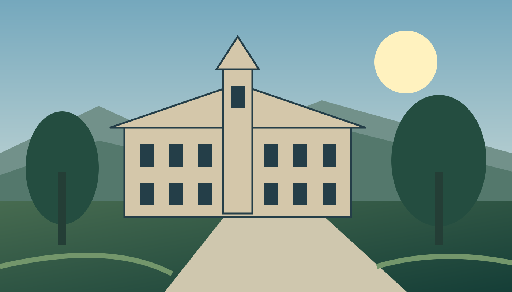

A living laboratory
A fictional student team brings field observations into the classroom.
Read the fieldwork story
An imagined campus • original illustrationUnlimited possibility
From your first field study to a question no one has asked, your next chapter starts with curiosity.
Explore a connected network of campuses, discover a field that excites you, and learn alongside people who see the world differently.
Find your academic path →Explore fields from living systems to community design.
Find your place across our sample campus network.
Bring new ideas into a community of inquiry.
Northvale traditions
At the imagined Lantern Walk, students gather at the old hall to welcome a new year of learning. Small moments become shared stories.
Find your Northvale experience →Ideas in motion
A fictional student team brings field observations into the classroom.
Read the fieldwork storyAn imagined learning commons connects students across disciplines.
Explore the commons storyCampus gardeners explore how a shared plot can become a shared classroom.
Read the garden storyThis is an independent, fictional local website created for research. Programs, costs, people, dates, and campus stories are illustrative. Applications and visit requests are simulations; no information is sent or saved.